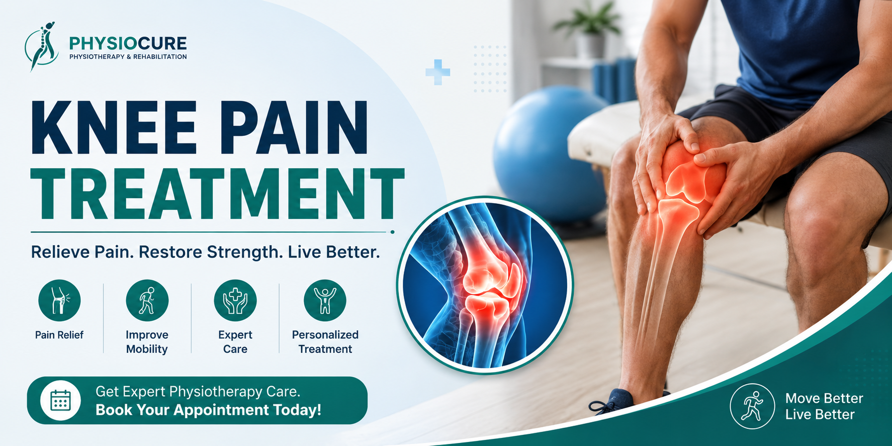

Knee Pain Treatment
Knee pain is one of the most common musculoskeletal problems affecting people of all ages. Whether caused by injury, arthritis, sports activities, or age-related wear and tear, physiotherapy can help reduce pain, improve mobility, and restore normal knee function without surgery in most cases.

What is Knee Pain?
The knee is one of the largest and most important joints in the body. It supports your body weight and enables walking, running, climbing stairs, and many daily activities. Damage to the muscles, ligaments, cartilage, tendons, or bones around the knee can result in pain and reduced mobility.
Early diagnosis and physiotherapy treatment can prevent long-term joint damage and help you return to your normal activities.
Common Symptoms
- Pain while walking
- Pain while climbing stairs
- Swelling around the knee
- Stiffness
- Difficulty bending the knee
- Clicking or popping sounds
- Weakness while standing
- Knee locking
- Instability while walking
Common Causes
- Osteoarthritis
- Ligament injuries (ACL, PCL, MCL)
- Meniscus tear
- Sports injuries
- Patellofemoral Pain Syndrome
- Tendon injuries
- Bursitis
- Obesity
- Overuse injuries
Who is at Risk?
- Older adults
- Sports persons
- People who are overweight
- People with physically demanding jobs
- Individuals with previous knee injuries
- People with weak thigh muscles
Benefits of Physiotherapy
Physiotherapy focuses on treating the root cause of knee pain instead of simply masking the symptoms. A personalized rehabilitation program helps restore strength, flexibility, and stability.
- Pain relief
- Improved joint mobility
- Strengthening of thigh muscles
- Improved balance
- Reduced swelling
- Improved walking ability
- Sports rehabilitation
- Posture correction
- Prevent future injuries
Recommended Exercises
- Straight Leg Raise
- Quad Sets
- Hamstring Stretch
- Heel Slides
- Wall Squats
- Step-Up Exercise
- Calf Stretch
- Mini Squats
Exercises should be performed only after assessment by a qualified physiotherapist.
Prevention Tips
- Maintain a healthy body weight.
- Exercise regularly.
- Warm up before sports.
- Wear supportive footwear.
- Avoid prolonged sitting.
- Strengthen your thigh muscles.
- Use proper lifting techniques.
- Do not ignore persistent knee pain.
🛒 Recommended Knee Care Products
We have selected a few products that may be useful for knee support, home exercise and everyday comfort. Please consult a qualified physiotherapist before using any exercise or support product, particularly if you have significant pain, swelling, instability or difficulty walking.
Affiliate Disclosure: As an Amazon Associate I earn from qualifying purchases.
🛒 View Recommended Knee Care Products on AmazonWhen Should You Visit a Physiotherapist?
- Pain lasting more than one week.
- Difficulty walking.
- Swelling that does not reduce.
- Knee giving way.
- Pain while climbing stairs.
- Difficulty standing after sitting.
- Reduced knee movement.
Frequently Asked Questions
Can physiotherapy cure knee pain?
Yes. Most knee pain caused by muscle weakness, arthritis, ligament injuries, or overuse responds very well to physiotherapy.
Is walking good for knee pain?
Walking can be beneficial depending on the cause of the pain. Your physiotherapist will advise the appropriate level of activity.
Can knee pain be treated without surgery?
Many patients recover successfully through physiotherapy, strengthening exercises, weight management, and lifestyle modifications without requiring surgery.
How long does recovery take?
Recovery depends on the cause and severity of the condition. Mild cases may improve within a few weeks, while ligament injuries or arthritis rehabilitation may take several months.
Need Expert Knee Pain Treatment?
Our experienced physiotherapists provide personalized assessment, advanced physiotherapy treatment, rehabilitation exercises, and long-term pain management to help you return to an active lifestyle.
Contact Us